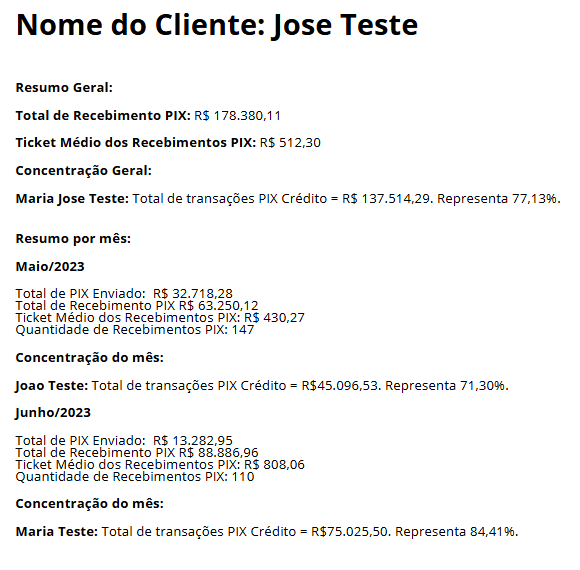
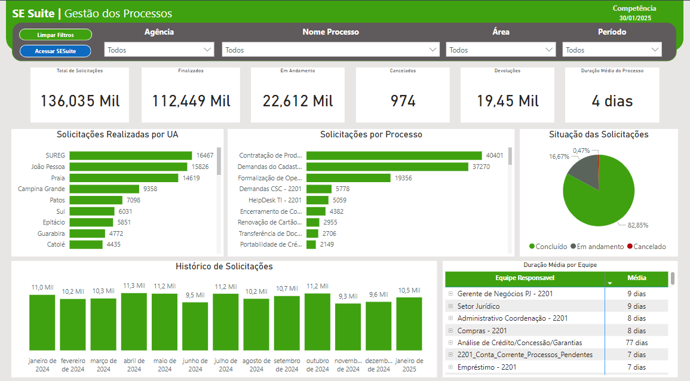
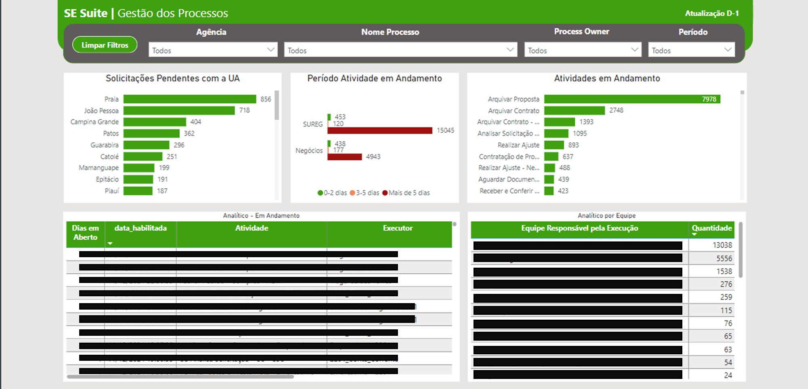

Relatório PIX
Esse projeto foi desenvolvido para atender à necessidade da empresa de realizar uma análise mais detalhada das movimentações financeiras via PIX, tanto em relação a pagamentos quanto recebimentos. Como o sistema original não disponibilizava uma base específica para esse tipo de análise, foi criado um script em Python capaz de processar o extrato de conta corrente gerado no formato PRN, sem configurações padronizadas e disponibilizar as informações em PDF.
O script realiza uma série de tratamentos no relatório para extrair informações cruciais para a análise financeira e de crédito, como:
- Total de Recebimento PIX: Calcula o valor total dos recebimentos via PIX em um determinado período, permitindo uma visão geral do fluxo de entrada.
- Ticket Médio dos Recebimentos: Com base na quantidade de transações e o valor total recebido, o script calcula o ticket médio, ou seja, o valor médio de cada transação PIX recebida, proporcionando uma métrica útil para avaliar o perfil das transações.
- Concentração de Recebimentos: O script identifica o percentual de concentração dos recebimentos, ou seja, determina se uma parcela significativa dos recebimentos veio de um único usuário ou de poucos usuários, facilitando a identificação de dependência de clientes específicos.
- Total de PIX Realizado: Além dos recebimentos, o script calcula o valor total de transações PIX realizadas pela empresa, permitindo uma análise completa do fluxo financeiro.
- Quantidade de Recebimentos PIX: Conta o número de transações de recebimento via PIX em um período, oferecendo uma visão detalhada do volume de transações.
- Análise Analítica em Excel: Após o processamento dos dados, o script exporta os resultados para uma planilha Excel, onde as informações são apresentadas de forma organizada e detalhada, facilitando a consulta e análises adicionais.
Essa ferramenta se mostrou essencial para a análise da capacidade financeira dos clientes, uma vez que fornece métricas detalhadas sobre os recebimentos e pagamentos via PIX, ajudando os gestores a tomar decisões mais informadas no que se refere à análise de crédito.

*Imagem para exemplificar com dados fictícios.
Aplicativo Power Apps
Este projeto foi desenvolvido totalmente na plataforma Power Apps da Microsoft, com o objetivo de auxiliar os gestores nas visitas para prospecção de novos clientes.
No aplicativo, o usuário irá dispor das principais informações sobre os produtos e serviços da empresa, de forma online na "palma da mão".
*Imagem para exemplificar sem dados sensíveis.
Dasbhoard Power BI - Gestão de Processos
Projeto desenvolvido para realizar a gestão dos processos realizados no sistema SESuite, da SoftExpert.
Foi utilizado conexão via DENODO para buscar as informações no banco de dados e a ferramenta de criação da dashboard foi o Power BI da Microsoft.


*Algumas informações foram ocultadas respeitando a lei da LGPD para proteger dados sensíveis.